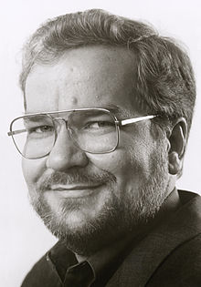
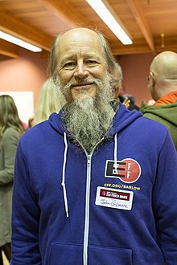
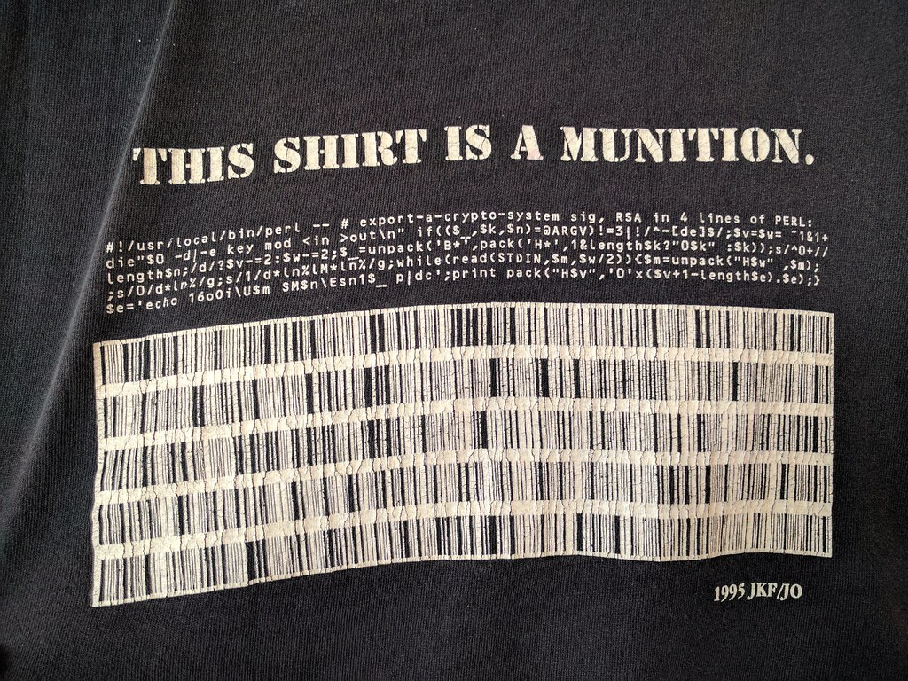

<!DOCTYPE html>
<html lang="en">
  <head>
    <meta charset="utf-8" />
    <meta name="viewport" content="width=device-width, initial-scale=1.0, maximum-scale=1.0, user-scalable=no" />

    <title></title>
    <link rel="stylesheet" href="dist/reveal.css" />
    <link rel="stylesheet" href="dist/theme/black.css" id="theme" />
    <link rel="stylesheet" href="plugin/highlight/zenburn.css" />
	<link rel="stylesheet" href="css/layout.css" />
	<link rel="stylesheet" href="plugin/customcontrols/style.css">
	<link rel="stylesheet" href="plugin/chalkboard/style.css">

	<link rel="stylesheet" href="plugin/reveal-pointer/pointer.css" />

    <link rel="stylesheet" href="css/videolayout.css" />

    <script defer src="dist/fontawesome/all.min.js"></script>

	<script type="text/javascript">
		var forgetPop = true;
		function onPopState(event) {
			if(forgetPop){
				forgetPop = false;
			} else {
				parent.postMessage(event.target.location.href, "app://obsidian.md");
			}
        }
		window.onpopstate = onPopState;
		window.onmessage = event => {
			if(event.data == "reload"){
				window.document.location.reload();
			}
			forgetPop = true;
		}

		function fitElements(){
			const itemsToFit = document.getElementsByClassName('fitText');
			for (const item in itemsToFit) {
				if (Object.hasOwnProperty.call(itemsToFit, item)) {
					var element = itemsToFit[item];
					fitElement(element,1, 1000);
					element.classList.remove('fitText');
				}
			}
		}

		function fitElement(element, start, end){

			let size = (end + start) / 2;
			element.style.fontSize = `${size}px`;

			if(Math.abs(start - end) < 1){
				while(element.scrollHeight > element.offsetHeight){
					size--;
					element.style.fontSize = `${size}px`;
				}
				return;
			}

			if(element.scrollHeight > element.offsetHeight){
				fitElement(element, start, size);
			} else {
				fitElement(element, size, end);
			}		
		}


		document.onreadystatechange = () => {
			fitElements();
			if (document.readyState === 'complete') {
				if (window.location.href.indexOf("?export") != -1){
					parent.postMessage(event.target.location.href, "app://obsidian.md");
				}
				if (window.location.href.indexOf("print-pdf") != -1){
					let stateCheck = setInterval(() => {
						clearInterval(stateCheck);
						window.print();
					}, 250);
				}
			}
	};


        </script>
  </head>
  <body>
    <div class="reveal">
      <div class="slides"><section  data-markdown><script type="text/template"><!-- .slide: class="drop" -->
<div class="" style="position: absolute; left: 0px; top: 0px; height: 540px; width: 960px; min-height: 540px; display: flex; flex-direction: column; align-items: center; justify-content: center" absolute="true">

# Blockchain
### A brief history of CryptoKind
</div></script></section><section  data-markdown><script type="text/template"><!-- .slide: class="drop" -->
<div class="" style="position: absolute; left: 0px; top: 0px; height: 540px; width: 960px; min-height: 540px; display: flex; flex-direction: column; align-items: center; justify-content: center" absolute="true">

## Disclaimer
</div></script></section><section  data-markdown><script type="text/template"><!-- .slide: class="drop" -->
<div class="" style="position: absolute; left: 0px; top: 0px; height: 540px; width: 960px; min-height: 540px; display: flex; flex-direction: column; align-items: center; justify-content: center" absolute="true">

## The cryptoanarchists
</div></script></section><section  data-markdown><script type="text/template"><!-- .slide: class="drop" -->
<div class="" style="position: absolute; left: 0px; top: 0px; height: 540px; width: 960px; min-height: 540px; display: flex; flex-direction: column; align-items: center; justify-content: center" absolute="true">

The Fifth Estate (2013) - 

<iframe width="560" height="315" src="https://www.youtube.com/embed/YQOiS_l_0Jk?start=6&si=9RbGaFbelqCyDrs6" title="YouTube video player" frameborder="0" allow="accelerometer; autoplay; clipboard-write; encrypted-media; gyroscope; picture-in-picture; web-share" allowfullscreen></iframe>
</div></script></section><section  data-markdown><script type="text/template"><!-- .slide: class="drop" -->
<div class="" style="position: absolute; left: 0px; top: 0px; height: 540px; width: 960px; min-height: 540px; display: flex; flex-direction: column; align-items: center; justify-content: center" absolute="true">


</div></script></section><section  data-markdown><script type="text/template"><!-- .slide: class="drop" -->
<div class="" style="position: absolute; left: 0px; top: 0px; height: 540px; width: 960px; min-height: 540px; display: flex; flex-direction: column; align-items: center; justify-content: center" absolute="true">

## Julian Assange 

Hacker

Creator of  Wikileaks 

Use of PGP
</div></script></section><section  data-markdown><script type="text/template"><!-- .slide: class="drop" -->
<div class="" style="position: absolute; left: 0px; top: 0px; height: 540px; width: 960px; min-height: 540px; display: flex; flex-direction: column; align-items: center; justify-content: center" absolute="true">

### Phil Zimmermann

</div></script></section><section  data-markdown><script type="text/template"><!-- .slide: class="drop" -->
<div class="" style="position: absolute; left: 0px; top: 0px; height: 540px; width: 960px; min-height: 540px; display: flex; flex-direction: column; align-items: center; justify-content: center" absolute="true">

### Phil Zimmermann 
#### Creator of PGP Encryption program (First cryptocriminal)

> The natural flow of technology tends to move in the direction of making surveillance easier", and "the ability of computers to track us doubles every eighteen months"
</div></script></section><section  data-markdown><script type="text/template"><!-- .slide: class="drop" -->
<div class="" style="position: absolute; left: 0px; top: 0px; height: 540px; width: 960px; min-height: 540px; display: flex; flex-direction: column; align-items: center; justify-content: center" absolute="true">

## Eric Hughes


</div></script></section><section  data-markdown><script type="text/template"><!-- .slide: class="drop" -->
<div class="" style="position: absolute; left: 0px; top: 0px; height: 540px; width: 960px; min-height: 540px; display: flex; flex-direction: column; align-items: center; justify-content: center" absolute="true">

## Eric Hughes

> Privacy is the power to reveal selectively oneself to the world
> 
[A Cypherpunk's Manifesto (1993)](https://www.activism.net/cypherpunk/manifesto.html)
</div></script></section><section  data-markdown><script type="text/template"><!-- .slide: class="drop" -->
<div class="" style="position: absolute; left: 0px; top: 0px; height: 540px; width: 960px; min-height: 540px; display: flex; flex-direction: column; align-items: center; justify-content: center" absolute="true">

## Timothy May


</div></script></section><section  data-markdown><script type="text/template"><!-- .slide: class="drop" -->
<div class="" style="position: absolute; left: 0px; top: 0px; height: 540px; width: 960px; min-height: 540px; display: flex; flex-direction: column; align-items: center; justify-content: center" absolute="true">

## Timothy May

> The State will of course try to slow or halt the spread of this technology, citing national security concerns, use of the technology by drug dealers and tax evaders, and fears of societal disintegration

[The Crypto Anarchist Manifesto (1988)](https://groups.csail.mit.edu/mac/classes/6.805/articles/crypto/cypherpunks/may-crypto-manifesto.html)
</div></script></section><section  data-markdown><script type="text/template"><!-- .slide: class="drop" -->
<div class="" style="position: absolute; left: 0px; top: 0px; height: 540px; width: 960px; min-height: 540px; display: flex; flex-direction: column; align-items: center; justify-content: center" absolute="true">

## Cypherpunk origins

<split >




</split>

Eric Huges, TimothyMay, JohnGilmore
</div></script></section><section  data-markdown><script type="text/template"><!-- .slide: class="drop" -->
<div class="" style="position: absolute; left: 0px; top: 0px; height: 540px; width: 960px; min-height: 540px; display: flex; flex-direction: column; align-items: center; justify-content: center" absolute="true">

# CryptoWars
</div></script></section><section  data-markdown><script type="text/template"><!-- .slide: class="drop" -->
<div class="" style="position: absolute; left: 0px; top: 0px; height: 540px; width: 960px; min-height: 540px; display: flex; flex-direction: column; align-items: center; justify-content: center" absolute="true">

### PGP- a national security threat

<iframe width="560" height="315" src="https://www.youtube.com/embed/lv8OFSWZkGs?si=JUKqRF4dI6CSOW3G&amp;start=69" title="YouTube video player" frameborder="0" allow="accelerometer; autoplay; clipboard-write; encrypted-media; gyroscope; picture-in-picture; web-share" allowfullscreen></iframe>

From [Cypherpunks Write Code Series](https://www.youtube.com/playlist?list=PLBuns9Evn1w-T2RwqMhUnTZbTTe-M-g42)
</div></script></section><section  data-markdown><script type="text/template"><!-- .slide: class="drop" -->
<div class="" style="position: absolute; left: 0px; top: 0px; height: 540px; width: 960px; min-height: 540px; display: flex; flex-direction: column; align-items: center; justify-content: center" absolute="true">

#### Exporting the code around the world


</div></script></section><section  data-markdown><script type="text/template"><!-- .slide: class="drop" -->
<div class="" style="position: absolute; left: 0px; top: 0px; height: 540px; width: 960px; min-height: 540px; display: flex; flex-direction: column; align-items: center; justify-content: center" absolute="true">


 Clipper chip was essential for law enforcement to keep up with the constantly progressing technology in the United States
</div></script></section><section  data-markdown><script type="text/template"><!-- .slide: class="drop" -->
<div class="" style="position: absolute; left: 0px; top: 0px; height: 540px; width: 960px; min-height: 540px; display: flex; flex-direction: column; align-items: center; justify-content: center" absolute="true">

## Clipper chip - A backdoor (1993)

<split>


</split>
</div></script></section><section  data-markdown><script type="text/template"><!-- .slide: class="drop" -->
<div class="" style="position: absolute; left: 0px; top: 0px; height: 540px; width: 960px; min-height: 540px; display: flex; flex-direction: column; align-items: center; justify-content: center" absolute="true">

## Clipper chip hacked


Matt Blade finds a vulnerability
</div></script></section><section  data-markdown><script type="text/template"><!-- .slide: class="drop" -->
<div class="" style="position: absolute; left: 0px; top: 0px; height: 540px; width: 960px; min-height: 540px; display: flex; flex-direction: column; align-items: center; justify-content: center" absolute="true">

## David Chaum


Ecash  (1982)
DigiCash (1989)
</div></script></section><section  data-markdown><script type="text/template"><!-- .slide: class="drop" -->
<div class="" style="position: absolute; left: 0px; top: 0px; height: 540px; width: 960px; min-height: 540px; display: flex; flex-direction: column; align-items: center; justify-content: center" absolute="true">

# Selective privacy


> Privacy is the power to reveal selectively oneself to the world
> 
[A Cypherpunk's Manifesto (1993)](https://www.activism.net/cypherpunk/manifesto.html)
</div></script></section><section  data-markdown><script type="text/template"><!-- .slide: class="drop" -->
<div class="" style="position: absolute; left: 0px; top: 0px; height: 540px; width: 960px; min-height: 540px; display: flex; flex-direction: column; align-items: center; justify-content: center" absolute="true">

## Bitcoin (2009)


</div></script></section><section  data-markdown><script type="text/template"><!-- .slide: class="drop" -->
<div class="" style="position: absolute; left: 0px; top: 0px; height: 540px; width: 960px; min-height: 540px; display: flex; flex-direction: column; align-items: center; justify-content: center" absolute="true">

#### Bitcoin now (Coinmarketcap)

</div></script></section><section  data-markdown><script type="text/template"><!-- .slide: class="drop" -->
<div class="" style="position: absolute; left: 0px; top: 0px; height: 540px; width: 960px; min-height: 540px; display: flex; flex-direction: column; align-items: center; justify-content: center" absolute="true">

#### Money...

<iframe width="650" height="400" src="https://www.youtube.com/embed/y9v7d6_lg2c?si=pm_8BmfNa2Jko1kk&amp;start=3" title="YouTube video player" frameborder="0" allow="accelerometer; autoplay; clipboard-write; encrypted-media; gyroscope; picture-in-picture; web-share" allowfullscreen></iframe>
</div></script></section><section  data-markdown><script type="text/template"><!-- .slide: class="drop" -->
<div class="" style="position: absolute; left: 0px; top: 0px; height: 540px; width: 960px; min-height: 540px; display: flex; flex-direction: column; align-items: center; justify-content: center" absolute="true">

### The way to Web 3.0


</div></script></section><section  data-markdown><script type="text/template"><!-- .slide: class="drop" -->
<div class="" style="position: absolute; left: 0px; top: 0px; height: 540px; width: 960px; min-height: 540px; display: flex; flex-direction: column; align-items: center; justify-content: center" absolute="true">


[Proof of Humanity](https://proofofhumanity.id/)
</div></script></section><section  data-markdown><script type="text/template"><!-- .slide: class="drop" -->
<div class="" style="position: absolute; left: 0px; top: 0px; height: 540px; width: 960px; min-height: 540px; display: flex; flex-direction: column; align-items: center; justify-content: center" absolute="true">

## The end
</div></script></section></div>
    </div>

    <script src="dist/reveal.js"></script>

    <script src="plugin/markdown/markdown.js"></script>
    <script src="plugin/highlight/highlight.js"></script>
    <script src="plugin/zoom/zoom.js"></script>
    <script src="plugin/notes/notes.js"></script>
    <script src="plugin/math/math.js"></script>
	<script src="plugin/mermaid/mermaid.js"></script>
	<script src="plugin/chart/chart.min.js"></script>
	<script src="plugin/chart/plugin.js"></script>
	<script src="plugin/menu/menu.js"></script>
	<script src="plugin/customcontrols/plugin.js"></script>
	<script src="plugin/chalkboard/plugin.js"></script>
	<script src="plugin/reveal-pointer/pointer.js"></script>
	<script src="plugin/elapsed-time-bar/elapsed-time-bar.js"></script>

    <script>
      function extend() {
        var target = {};
        for (var i = 0; i < arguments.length; i++) {
          var source = arguments[i];
          for (var key in source) {
            if (source.hasOwnProperty(key)) {
              target[key] = source[key];
            }
          }
        }
        return target;
      }

	  function isLight(color) {
		let hex = color.replace('#', '');

		// convert #fff => #ffffff
		if(hex.length == 3){
			hex = `${hex[0]}${hex[0]}${hex[1]}${hex[1]}${hex[2]}${hex[2]}`;
		}

		const c_r = parseInt(hex.substr(0, 2), 16);
		const c_g = parseInt(hex.substr(2, 2), 16);
		const c_b = parseInt(hex.substr(4, 2), 16);
		const brightness = ((c_r * 299) + (c_g * 587) + (c_b * 114)) / 1000;
		return brightness > 155;
	}

	var bgColor = getComputedStyle(document.documentElement).getPropertyValue('--r-background-color').trim();
	var isLight = isLight(bgColor);

	if(isLight){
		document.body.classList.add('has-light-background');
	} else {
		document.body.classList.add('has-dark-background');
	}

      // default options to init reveal.js
      var defaultOptions = {
        controls: true,
        progress: true,
        history: true,
        center: true,
        transition: 'default', // none/fade/slide/convex/concave/zoom
        plugins: [
          RevealMarkdown,
          RevealHighlight,
          RevealZoom,
          RevealNotes,
          RevealMath.MathJax3,
		  RevealMermaid,
		  RevealChart,
		  RevealCustomControls,
		  RevealMenu,
	      RevealPointer,
		  RevealChalkboard, 
		  ElapsedTimeBar
        ],


    	allottedTime: 1500 * 1000,

		mathjax3: {
			mathjax: 'plugin/math/mathjax/tex-mml-chtml.js',
		},
		markdown: {
		  gfm: true,
		  mangle: true,
		  pedantic: false,
		  smartLists: false,
		  smartypants: false,
		},

		mermaid: {
			theme: isLight ? 'default' : 'dark',
		},

		customcontrols: {
			controls: [
				{id: 'toggle-overview',
				title: 'Toggle overview (O)',
				icon: '<i class="fa fa-th"></i>',
				action: 'Reveal.toggleOverview();'
				},
				{ icon: '<i class="fa fa-pen-square"></i>',
				title: 'Toggle chalkboard (B)',
				action: 'RevealChalkboard.toggleChalkboard();'
				},
				{ icon: '<i class="fa fa-pen"></i>',
				title: 'Toggle notes canvas (C)',
				action: 'RevealChalkboard.toggleNotesCanvas();'
				},
			]
		},
		menu: {
			loadIcons: false
		}
      };

      // options from URL query string
      var queryOptions = Reveal().getQueryHash() || {};

      var options = extend(defaultOptions, {"width":960,"height":540,"margin":0,"maxScale":4,"controls":true,"progress":true,"slideNumber":"true","transition":"fade","transitionSpeed":"default"}, queryOptions);
    </script>

    <script>
      Reveal.initialize(options);
    </script>
  </body>

  <!-- created with Advanced Slides -->
</html>
